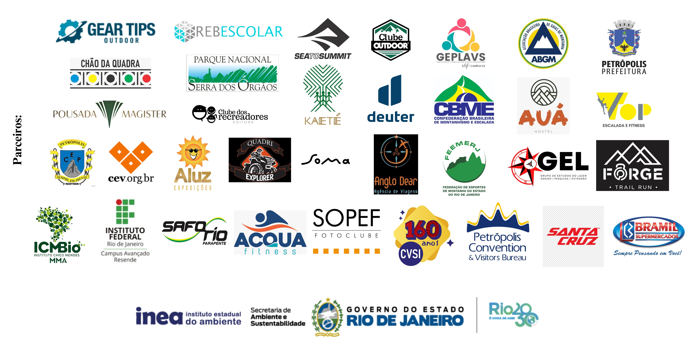
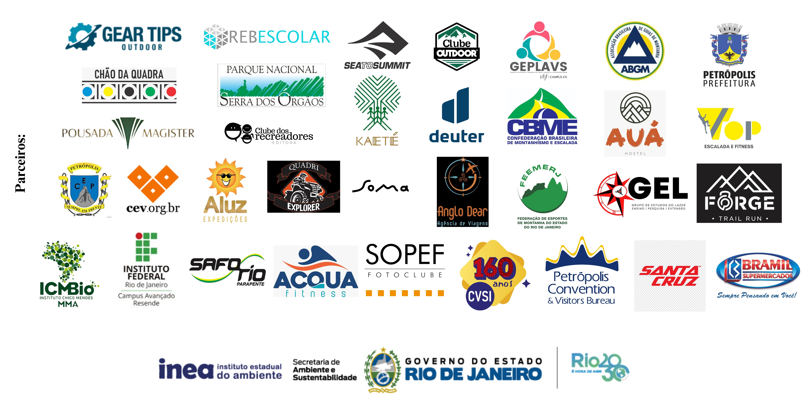

XIII Congresso Brasileiro de Atividades de Aventura
(CBAA)
VII Congresso Internacional de Atividades de Aventura
(CIAA)

TRABALHOS COMPLETOS: EIXO 3 - AVENTURA E TURISMO
LAZER, CULTURA E NATUREZA NAS PRAIAS DE UBATUBA – SP
Dimitri Wuo Pereira
TCHIBUM! O LAZER BALNEAR NA REGIÃO METROPOLITANA DE BELÉM DO PARÁ - COM VISTAS A UMA CARTOGRAFIA TURISTICA E SUSTENTAVEL
Andréa Santos Azevedo, Patrícia do Socorro Chaves de Araújo, Maurila Ferreira Sarmento
A AVENTURA DO TURISMO CIENTÍFICO NAS EXPEDIÇÕES DO CEFETRJ EXPERIÊNCIAS NA TRILHA DO MORRO MEU CASTELO, PETRÓPOLIS, REGIÃO SERRANA DO RIO DE JANEIRO
Tainara Guimarães de Rezende, Ana Carolina Marques Correa Monken Vieira, Maxmilian Valadares de Araújo, Bruno César dos Santos, Marcelo Faria Porretti, Marcelo Soares Salomão, Fernando Amaro Pessoa
TURISMO DE AVENTURA EM CANINDÉ-CE MAPEAMENTO DOS ESPAÇOS PARA A PRÁTICA DE AVENTURA NO MUNICÍPIO
Antonio Nilson Coelho Holanda, Raimundo Erick de Sousa Agapto
TURISMO DE AVENTURA EM PETRÓPOLIS CONSIDERAÇÕES SOBRE OS DESAFIOS E OPORTUNIDADES
Vitória Silva Oliveira, Karen da Costa Santos, Miguel Santos Quintino Cavalcanti, Ana Paula Gurgel de Vasconcelos, Robson Henzo Luigi Velho Fortes & Danielle Carvalho Ferreira
GEORROTEIRO PARA A TRILHA DO CASTELINHO - PETRÓPOLIS (RJ)
Ana Carolina Marques Correa Monken Vieira, Allan Galvão Zaparoli Arantes, Fernando Amaro Pessoa
 
